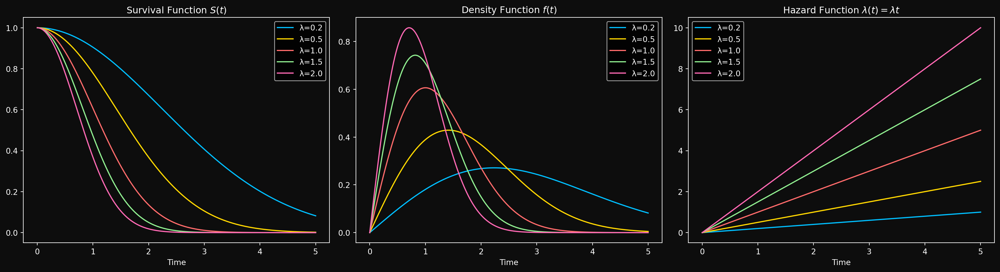
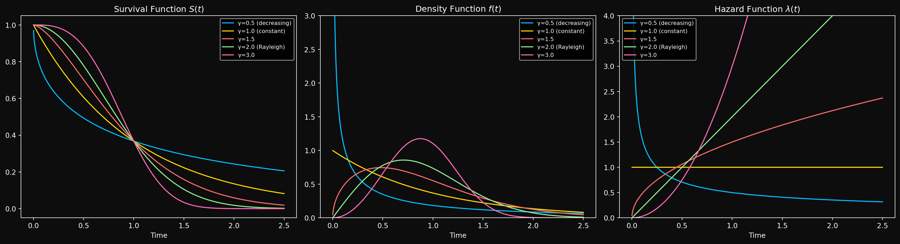
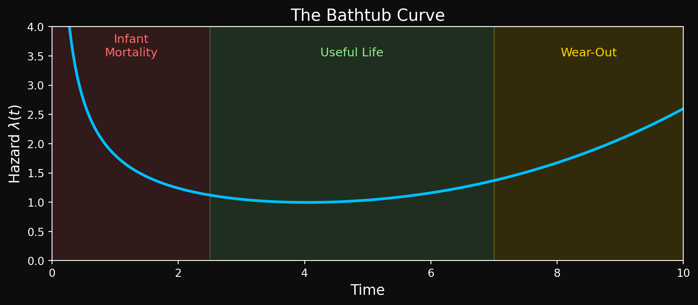

Recap of Part 1 and What to Expect in Part 2
In Part 1, we established why survival analysis exists as a separate field- regression breaks, censoring is real and the functions we care about for survival analysis are fundamentally different from conditional expectations. Using basic calculus and probability theory, we introduced the key actors in survival analysis- the survival function, the hazard function and the cumulative hazard function. We showed that if you know one of these, you know all of them. In Part 2, we ask a natural follow up question- what does a survival distribution look like? The answer entirely depends on the shape of \(\lambda(t)\), the hazard function. We will see how different shapes of the hazard function lead to different survival curves and what that means in real life. A constant hazard leads to something familiar from undergrad probability. A linearly increasing hazard leads somewhere surprising. And a two parameter family called Weibull quietly unifies both of these and more. We will also understand the bathtub curve, a common shape for the hazard function in real life. Finally, we will meet the bathtub curve, a common pattern of failure in real life that cannot be captured by a single parametric distribution but can be approximated by stitching together different phases of the Weibull distribution.
Distributions in Survival Analysis
Constant Hazard: The Exponential Distribution
What happens if the hazard function is constant over time? That is, \(\lambda(t) = \lambda\) for all \(t\)? From the interpretation of the hazard function, this means for any time interval \(delta_t\), the probability of failure in that interval is the same regardless of how long the object has survived so far. That is, for any time intervals\([t_1, t_1 + \Delta t]\) and \([t_2, t_2 + \Delta t]\), we have the same probability of failure (conditional on survival up to \(t_1\) and \(t_2\) respectively). This is a strong assumption, but it leads to a very simple distribution. Let’s derive it.
We know that \(\lambda(t) = \lambda\) is constant, so we can write the cumulative hazard function as \(\Lambda(t) = \int_0^t \lambda(s) ds = \lambda t\). Using the relationship between the survival function and the cumulative hazard function, we have \(S(t) = e^{-\Lambda(t)} = e^{-\lambda t}\). The Cumulative distribution function (CDF) is then \(F(t) = 1 - S(t) = 1 - e^{-\lambda t}\). The probability density function (PDF) is the derivative of the CDF, which gives us \(f(t) = \lambda e^{-\lambda t}\). This distribution is known as the Exponential distribution with rate parameter \(\lambda\) - one of the most important continuous distributions in probability theory (probably after the normal distribution). The rate parameter \(\lambda\) is in fact the rate of failure per unit time. If you didn’t understand why the parameter lambda is called the rate parameter in your previous courses, you should now. We write \(T \sim \text{Exponential}(\lambda)\) to denote that the random variable \(T\) follows an Exponential distribution with rate parameter \(\lambda\).
Once we have a distribution, the next natural quantities to compute are the moments of the distribution. It is a simple exercise in integration to show that the mean \(E[T]\) of the exponential distribution is \(1/\lambda\) and the variance \(\text{Var}[T]\) is \(1/\lambda^2\). Other quantities related to the moments are the median and the mode. The median is the time \(t\) such that \(F(t) = 0.5\), which gives us the half-life (the time at which 50% of the systems have failed) \(t_{1/2} = \ln(2)/\lambda\). Notice that the half-life is inversely proportional to the rate parameter, which is quite intuitive given the physical interpretation of \(\lambda\). The mode is the time at which the PDF is maximized, which for the exponential distribution is at \(t=0\). The distribution is right skewed- most systems fail early, but there is a long tail of systems that survive for a long time. Here is how the Exponential distribution looks like for different values of \(\lambda\).
An important property of the exponential distribution is that it is memoryless. What does that mean?
Suppose the system has already survived for time \(t_0\). What is the probability that it will survive for an additional time \(t\)? Let’s compute this probability. We want \(P(T > t_0 + t | T > t_0)\). Using the definition of conditional probability, we have: \[P(T > t_0 + t \mid T > t_0) = \frac{P(\{T > t_0 + t\} \cap \{T > t_0\})}{P(T > t_0)}\]
Since \(\{T > t_0 + t\} \subseteq \{T > t_0\}\) (because if the system survives for \(t_0 + t\), it must have survived for \(t_0\)), we can simplify this to:
\[P(T > t_0 + t \mid T > t_0) = \frac{P(T > t_0 + t)}{P(T > t_0)}\]
Substituting the survival function for the Exponential distribution, we get:
\[P(T > t_0 + t \mid T > t_0) = \frac{e^{-\lambda(t_0 + t)}}{e^{-\lambda t_0}} = e^{-\lambda t} = P(T > t)\]
What does this mean? It means that the probability of surviving for an additional time \(t\) does not depend on how long the system has already survived. In other words, the system has no memory of its past survival time. This is a unique property of the exponential distribution and is not shared by any other continuous distribution. In fact, the only memoryless continuous distribution is exponential.
Let’s look at a simple example to illustrate this. Suppose we have a light bulb that has an Exponential lifetime with a rate of \(\lambda = 0.1\) failures per hour. The mean lifetime of the light bulb is \(1/\lambda = 10\) hours. If the light bulb has already been on for 5 hours, what is the probability that it will last for another 5 hours? Using the memoryless property, we can compute this as:
\[P(T > 10 | T > 5) = P(T > 5) = e^{-0.1 \cdot 5} = e^{-0.5} \approx 0.6065\]
This means that even though the light bulb has already lasted for 5 hours, it still has a 60.65% chance of lasting for another 5 hours. Taking this to the extreme, if the light bulb has already lasted for 1000 hours, the probability that it will last for another 5 hours is still 60.65%. This is a direct consequence of the memoryless property of the exponential distribution.
This is clearly unrealistic for most real-world systems. For example, if a machine has been running for 10 years, it is likely to be more prone to failure than a brand new machine. But it makes the exponential distribution a useful starting point for understanding survival analysis and serves as a building block for more complex distributions. When your data looks like it has a constant hazard, the exponential distribution is a good first choice for modeling it.
Next, we will look at what happens when the hazard function is not constant, but instead increases linearly with time. This leads us to the Rayleigh distribution, which has some surprising properties.
Linearly Increasing Hazard: The Rayleigh Distribution
Suppose for a fixed constant \(\lambda > 0\), the hazard function increases linearly with time as \(\lambda(t) = \lambda t\). This means that the probability of failure in a small time interval \(\Delta t\) increases with time. This is a more realistic assumption for many real-world systems, as they tend to wear out over time. Let’s derive the corresponding distribution (if it exists) and explore its properties. The cumulative hazard function is given by \(\Lambda(t) = \int_0^t \lambda(s)\, ds = \int_0^t \lambda s\, ds = \frac{\lambda t^2}{2}\). Using the relationship between the survival function and the cumulative hazard function, we have \(S(t) = e^{-\Lambda(t)} = e^{-\frac{\lambda t^2}{2}}\). The CDF is then \(F(t) = 1 - S(t) = 1 - e^{-\frac{\lambda t^2}{2}}\). The PDF is the derivative of the CDF, which gives us \(f(t) = \lambda t e^{-\frac{\lambda t^2}{2}}\). This distribution is known as the Rayleigh distribution, and we write \(T \sim \text{Rayleigh}\left(\frac{1}{\sqrt{\lambda}}\right)\). The mean and variance are:
\[E[T] = \sqrt{\frac{\pi}{2\lambda}}, \qquad \text{Var}[T] = \frac{2}{\lambda}\left(1 - \frac{\pi}{4}\right)\]
The mode of the Rayleigh distribution is at \(t = \sqrt{\frac{1}{\lambda}}\), which is the time at which the PDF is maximized. The median can be computed by solving \(F(t) = 0.5\), which gives us \(t_{1/2} = \sqrt{\frac{2\ln(2)}{\lambda}}\).
As we will see shortly, the Rayleigh distribution is a special case of the Weibull distribution — nature’s way of telling us that linearly increasing hazard and Weibull are secretly the same thing. But before we get there, let’s look at how the Rayleigh distribution looks like for different values of \(\lambda\).

Before we move on, let’s take a short but illuminating detour to understand a connection between independent normal random variables and the Rayleigh distribution. Think of a rotating machine (motor, pump, compressor, etc.) that has two independent sources of random vibration in the horizontal(X) and vertical(Y) directions. Let \(X\) and \(Y\) be independent normal random variables with mean 0 and variance \(\sigma^2\). The magnitude of the vibration is given by \(R = \sqrt{X^2 + Y^2}\). Can we find the distribution of \(R\)?
To find the distribution of \(R\), we can use the fact that \(X\) and \(Y\) are independent normal random variables. The joint distribution of \(X\) and \(Y\) is given by: \[f_{X,Y}(x,y) = \frac{1}{2\pi\sigma^2} e^{-\frac{x^2 + y^2}{2\sigma^2}}\] (Because the joint distribution of two independent normal random variables is the product of their individual distributions).
To find the distribution of \(R\), let’s fix a value \(R = r_0\) and calculate the probability that \(R \leq r_0\). Mathematically, we want to compute \(P(R \leq r_0) = P(\sqrt{X^2 + Y^2} \leq r_0)\). Writing this in terms of the joint distribution of \(X\) and \(Y\), we have:
\[P(R \leq r_0) = \iint_{x^2 + y^2 \leq r_0^2} f_{X,Y}(x,y) dx dy\]
By the previous independence expression above, we can write this as:
\[P(R \leq r_0) = \iint_{x^2 + y^2 \leq r_0^2} \frac{1}{2\pi\sigma^2} e^{-\frac{x^2 + y^2}{2\sigma^2}} dx dy\]
Go back to your multivariable calculus notes and recall that the region of integration is a disk of radius \(r_0\) centered at the origin. It is easier to evaluate this integral in polar coordinates, where \(x = r \cos(\theta)\) and \(y = r \sin(\theta)\). The Jacobian of the transformation from Cartesian to polar coordinates is \(r\), so we have:
\[P(R \leq r_0) = \int_0^{2\pi} \int_0^{r_0} \frac{1}{2\pi\sigma^2} e^{-\frac{r^2}{2\sigma^2}} r dr d\theta\]
The integrand can be decoupled into a product of a function of \(r\) and a function of \(\theta\), so we can first evaluate the outer integral with respect to \(\theta\) and get some cancellations:
\[P(R \leq r_0) = \int_0^{r_0} \frac{1}{\sigma^2} e^{-\frac{r^2}{2\sigma^2}} r dr\]
Taking the constant \(\frac{1}{\sigma^2}\) outside the integral, we have: \[P(R \leq r_0) = \frac{1}{\sigma^2} \int_0^{r_0} r e^{-\frac{r^2}{2\sigma^2}} dr\]
To evaluate this integral, we can use the substitution \(u = \frac{r^2}{2\sigma^2}\), which gives us \(du = \frac{r}{\sigma^2} dr\). The limits of integration change accordingly: when \(r = 0\), we have \(u = 0\), and when \(r = r_0\), we have \(u = \frac{r_0^2}{2\sigma^2}\). Substituting these into the integral, we get:
\[P(R \leq r_0) = \int_0^{\frac{r_0^2}{2\sigma^2}} e^{-u} du\]
If we set U to be an exponential random variable with rate parameter 1, then the above integral is just the CDF of U evaluated at \(\frac{r_0^2}{2\sigma^2}\). The CDF of an exponential random variable with rate parameter 1 is given by \(F_U(u) = 1 - e^{-u}\) for \(u \geq 0\). Substituting \(u = \frac{r_0^2}{2\sigma^2}\), we get:
\[F_R(r_0) = 1 - e^{-\frac{r_0^2}{2\sigma^2}}\]
For a general \(r\), the CDF of \(R\) is given by:
\[F_R(r) = 1 - e^{-\frac{r^2}{2\sigma^2}}\]
The PDF of \(R\) can be obtained by differentiating the CDF with respect to \(r\), which gives us:
\[f_R(r) = \frac{r}{\sigma^2} e^{-\frac{r^2}{2\sigma^2}}\]
This is exactly the PDF of a Rayleigh distribution with parameter \[\lambda = \frac{1}{\sigma^2}\]. To verify that the hazard rate is indeed linearly increasing, we can compute the hazard function as follows:
\[\lambda_R(r) = \frac{f_R(r)}{S_R(r)} = \frac{\frac{r}{\sigma^2} e^{-\frac{r^2}{2\sigma^2}}}{e^{-\frac{r^2}{2\sigma^2}}} = \frac{r}{\sigma^2}\] which is linearly increasing in \(r\). Thus, the magnitude of the vibration \(R\) follows a Rayleigh distribution with parameter \(\lambda = \frac{1}{\sigma^2}\), and its hazard function is linearly increasing in \(r\). Before we end this section, let’s stare at the expression for the CDF of \(R\) for a moment above. Notice that the substitution \(u = \frac{r^2}{2\sigma^2}\) we used earlier was not just a computational trick. If we define \(W = \frac{R^2}{2\sigma^2}\), then:
\[P(W \leq w) = P\left(\frac{R^2}{2\sigma^2} \leq w\right) = 1 - e^{-w}\]
which is exactly the CDF of a standard \(\text{Exponential}(1)\) random variable. So \(W = \frac{R^2}{2\sigma^2} \sim \text{Exponential}(1)\), or equivalently \(R^2 \sim \text{Exponential}\left(\frac{1}{2\sigma^2}\right)\). Note that you can show this derivation rigorously with the change of variables formula for PDFs but I am not going to do that here. The key takeaway is that the Rayleigh distribution can be obtained by applying a squaring transformation to an exponential random variable. The substitution variable \(u\) was the exponential random variable all along — the Rayleigh and exponential distributions are secretly the same family, just related by a squaring transformation.
With the Rayleigh distribution under our belt, we now return to the main story. The exponential and Rayleigh are special cases of a more powerful family- one distribution to rule them all, one distribution to find them, one distribution to bring them all and in the darkness bind them. Enter the Weibull.
The Weibull Distribution: A Unifying Family of Distributions
We have seen two specific distributions that arise from particular shapes of the hazard function: the Exponential distribution from a constant hazard and the Rayleigh distribution from a linearly increasing hazard. A natural question is: What if the hazard follows a power law, i.e., \(\lambda(t) = \lambda t^{\gamma-1}\) for some \(\gamma > 0\)? When \(\gamma = 1\), we recover the exponential distribution with a constant hazard. When \(\gamma = 2\), we recover the Rayleigh distribution with a linearly increasing hazard. And for other values of \(\gamma\), we get an entire family of distributions known as the Weibull distribution. It is the workhorse of survival analysis and reliability engineering- flexible enough to model increasing, decreasing, or constant hazard, and simple enough to be analytically tractable.
Before we explore the Weibull distribution in detail, we must make a change. So far a single parameter \(\lambda\) has controlled both the shape of the hazard (how fast it grows) and the scale of the distribution (how long the system lasts). Mixing two roles into a single parameter is not ideal and makes it harder to understand the effect of each role on the distribution. Think of the normal distribution: if it were parameterized by a single number controlling both the mean and the variance, interpretation would be a nightmare. For the Weibull distribution, we separate these roles by introducing a scale parameter \(\theta > 0\). Making the substitution \(\lambda = \frac{\gamma}{\theta^\gamma}\), the power-law hazard becomes:
\[\lambda(t) = \frac{\gamma}{\theta^\gamma} t^{\gamma - 1} = \frac{\gamma}{\theta}\left(\frac{t}{\theta}\right)^{\gamma-1}\]
Now \(\gamma\) controls the shape of the hazard — is it growing, shrinking, or flat? And \(\theta\) controls the scale — at what timescale are failures happening? Two parameters, two jobs, clean interpretation. We write \(T \sim \text{Weibull}(\theta, \gamma)\) to denote that the random variable \(T\) follows a Weibull distribution with scale parameter \(\theta\) and shape parameter \(\gamma\). The derivation follows the same pattern as before — integrate the hazard to get \(\Lambda(t)\), exponentiate to get \(S(t)\), and differentiate to get \(f(t)\). I encourage you to verify this yourself.
Integrating the hazard function, we get the cumulative hazard function: \[\Lambda(t) = \int_0^t \lambda(s) ds = \int_0^t \frac{\gamma}{\theta}\left(\frac{s}{\theta}\right)^{\gamma - 1} ds = \left(\frac{t}{\theta}\right)^\gamma\]
The probability density function (PDF) of the Weibull distribution is given by: \[f(t) = \frac{\gamma}{\theta}\left(\frac{t}{\theta}\right)^{\gamma - 1} e^{-\left(\frac{t}{\theta}\right)^\gamma}\]
The cumulative distribution function (CDF) is: \[F(t) = 1 - e^{-\left(\frac{t}{\theta}\right)^\gamma}\]
And finally, the survival function is: \[S(t) = e^{-\left(\frac{t}{\theta}\right)^\gamma}\]
The mean and variance of the Weibull distribution can be expressed in terms of the gamma function \(\Gamma(\cdot)\) as follows: \[E[T] = \theta \Gamma\left(1 + \frac{1}{\gamma}\right), \qquad \text{Var}[T] = \theta^2 \left[\Gamma\left(1 + \frac{2}{\gamma}\right) - \left(\Gamma\left(1 + \frac{1}{\gamma}\right)\right)^2\right]\]
where the gamma function \(\Gamma(z)\) is defined as \(\Gamma(z) = \int_0^\infty t^{z-1} e^{-t} dt\) for \(z > 0\). The mode of the Weibull distribution can be computed by finding the value of \(t\) that maximizes the PDF, which gives us:
\[t_{\text{mode}} = \theta \left(\frac{\gamma - 1}{\gamma}\right)^{\frac{1}{\gamma}} \quad \text{for } \gamma > 1\]
For \(\gamma \leq 1\), the PDF is maximized at \(t = 0\), just like the exponential distribution. This makes sense — when the hazard is constant or decreasing, failures are most concentrated near the start.
The median can be computed by solving \(F(t) = 0.5\), which gives us: \[t_{1/2} = \theta (\ln(2))^{\frac{1}{\gamma}}\]
The scale parameter \(\theta\) has a beautiful interpretation: At time \(t = \theta\), the CDF is \(F(\theta) = 1 - e^{-1} \approx 0.632\). This means that regardless of the shape parameter \(\gamma\), about 63.2% of the systems will have failed by the time we reach the scale parameter \(\theta\). This is a neat property of the Weibull distribution and gives us an intuitive way to interpret the scale parameter \(\theta\) — it is the time by which approximately 63.2% of the systems have failed.
Special Cases of the Weibull Distribution
As we have noted earlier, the Weibull distribution is a unifying family- the two distributions we have seen so far are special cases of the Weibull distribution.
\(\gamma = 1\): The Exponential Distribution. When the shape parameter \(\gamma\) is equal to 1, the hazard function simplifies to \(\lambda(t) = \frac{1}{\theta}\), which is a constant hazard. But we already know that a constant hazard corresponds to the exponential distribution. Thus a Weibull distribution with \(\gamma = 1\) is equivalent to an exponential distribution with rate parameter \(\lambda = \frac{1}{\theta}\) or mean \(E[T] = \theta\). In other words, \(T \sim \text{Weibull}(\theta, 1)\) is the same as \(T \sim \text{Exponential}\left(\frac{1}{\theta}\right)\). The physical interpretation of this is that when \(\gamma = 1\), the system has a constant failure rate over time, which is a hallmark of the exponential distribution. Memorylessness (as we have explored earlier) is a direct consequence of constant hazard. Sudden unexpected failures, lightning strikes and random external shocks are examples of phenomena that can be modeled using the exponential distribution.
\(\gamma = 2\): The Rayleigh Distribution. When the shape parameter \(\gamma\) is equal to 2, the hazard function simplifies to \(\lambda(t) = \frac{2}{\theta^2} t\), which is a linearly increasing hazard. We have already seen that a linearly increasing hazard \(\lambda(t) = \lambda t\) corresponds to the Rayleigh distribution. Matching coefficients gives \(\lambda = \frac{2}{\theta^2}\), so \(T \sim \text{Weibull}(\theta, 2)\) is the same as \(T \sim \text{Rayleigh}\left(\frac{2}{\theta^2}\right)\). The physical interpretation is that when \(\gamma = 2\), the system has a failure rate that increases linearly over time — the older it gets, the more dangerous the next instant. Wear-out failures, fatigue in materials, and aging processes are phenomena that can be modeled using the Rayleigh distribution.
\(\gamma < 1\): Decreasing Hazard. When the shape parameter \(\gamma\) is less than 1, the hazard function decreases over time. This models systems with high early failure rates that stabilize over time — think of manufacturing defects that cause early failures, but surviving units are essentially robust. This is sometimes called infant mortality. As we will see in the next section, decreasing hazard is just one phase of a richer failure pattern known as the bathtub curve.
\(\gamma > 1\): Increasing Hazard. The hazard function increases over time. This models systems that wear out — the longer they run, the more likely they are to fail. This is the most common scenario in reliability engineering.
Let us look at how the Weibull distribution looks like for different values of \(\gamma\) and a fixed scale parameter \(\theta = 1\).

The Bathtub Curve: A Common Failure Pattern in Real Life
Unfortunately, real-world failures are often more complex than what can be captured by (a single) parametric distribution like the Weibull. One common pattern observed in many systems is the bathtub curve, which describes a failure rate that has three distinct phases:
Phase 1: Infant Mortality (Decreasing Hazard, \(\gamma < 1\)).: In the early life of a system, there is a high failure rate due to manufacturing defects, installation errors or weak components. Systems that survive this phase are typically more robust and have a lower failure rate.
Phase 2: Useful Life (Constant Hazard, \(\gamma \approx 1\)).: After the initial phase, the failure rate stabilizes and remains relatively constant. This is the “useful life” phase where failures are mostly random and not due to wear-out. This is the exponential regime- memorylessness is a good approximation here.
Phase 3: Wear-Out (Increasing Hazard, \(\gamma > 1\)).: As the system ages, components wear out and the failure rate increases. This is the wear-out phase where failures are more likely to occur as time goes on. The older the system, the more dangerous the next instant.
Here is a schematic of the bathtub curve:

The Weibull distribution can model each phase of the bathtub curve individually by adjusting the shape parameter \(\gamma\). However, a single Weibull cannot capture all three phases simultaneously — the hazard can only be monotonically increasing, decreasing, or constant. To model the full bathtub curve, reliability engineers often use a mixture of Weibull distributions or more flexible models that allow the hazard to change shape over time. This is an active area of research in reliability engineering and survival analysis, and we will revisit it in later parts of this series.
What’s Next?
We now have a vocabulary of distributions to model different shapes of hazard functions. The exponential distribution for constant hazard, the Rayleigh distribution for linearly increasing hazard, and the Weibull distribution for power-law hazard. We have also seen how the Weibull distribution unifies these special cases and provides a flexible framework for modeling a wide range of failure patterns. But a distribution is unfortunately not a model. In Part 3, we ask- given a dataset of failure times (some censored, some not), how do we fit a distribution to the data? How do we estimate the parameters of the distribution? We will extend the maximum likelihood estimation framework to handle censored observations — the key ingredient that makes survival analysis different from standard statistical inference. We will review and revisit familiar diagnostic tools like the Q-Q plot and the K-S test to assess the quality of our fits. We will also write Python code to fit these distributions to real (synthetic) data using the library lifelines. Make no mistake- the series is still very mathematical but we will also have plenty of code and practical examples to keep things grounded. The clock is still ticking.
A Note on Agentic Predictive Maintenance
The mathematical framework we are building in this series is not purely academic. Modern predictive maintenance systems are increasingly or striving to be agentic — AI agents that continuously monitor machine health, estimate survival probabilities in real time, and autonomously trigger maintenance actions before failures occur. The survival function \(S(t)\) and the hazard function \(\lambda(t)\) are the core quantities these agents reason about. An agent that knows a machine’s hazard rate is spiking can schedule maintenance, reroute workloads, or escalate to a human operator — all without being explicitly programmed for every failure scenario. We will dedicate a future part of this series to this intersection of survival analysis and agentic AI. For now, keep this application in the back of your mind as we build the mathematical foundations. And no — the mathematics is not going anywhere. Every agent decision we discuss will be grounded in the theory and proofs we are building right now.